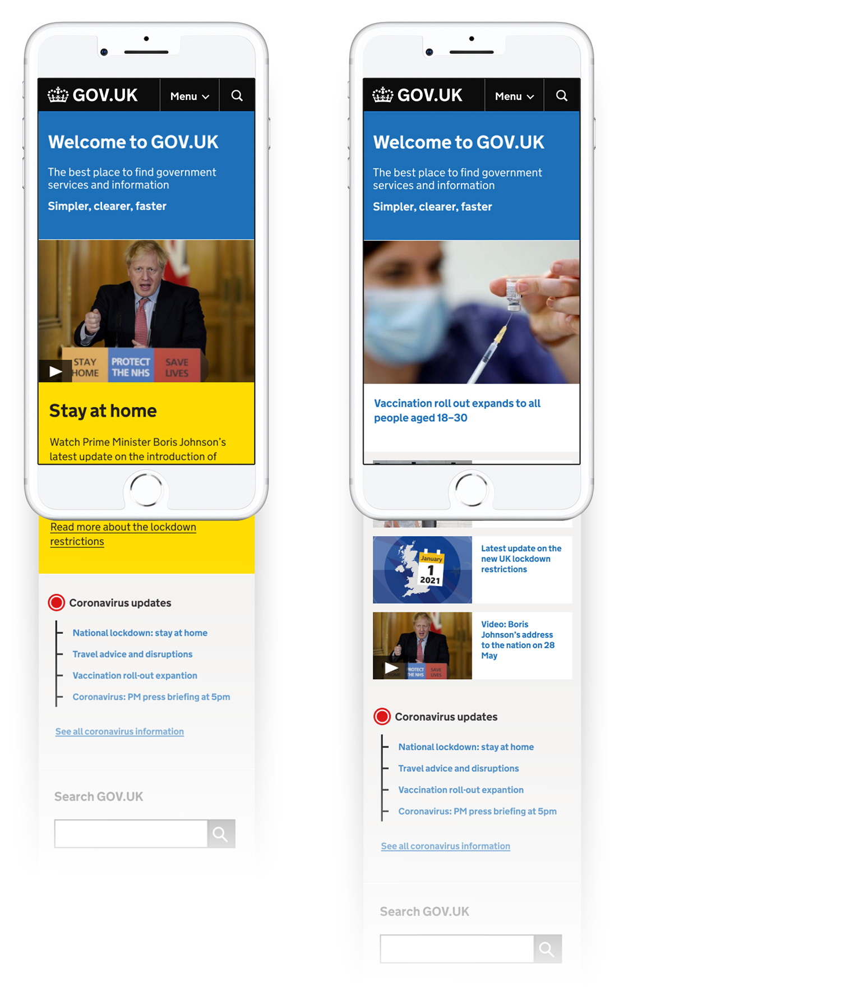

Expanding the GOV.UK design language
Campaigns on GOV.UK
In order to truly be the home of all government services and information we need to make room within GOV.UK's eco-system for time-boxed marketing style campaign content. We've been working to develop a campaign publishing tool that enables greater design flexibility in terms of layout options and brand adaptability. Building on the trusted and accessible GOV.UK design language in a sustainable way is key to this work.
The new GOV.UK campaign template which enables more flexibility within the trusted GOV.UK design langauge

Template specification document outlining how the different design patterns should work across mobile and desktop
Another example of the campaign template on desktop
Iterating the homepage to meet new user expectations
The GOV.UK homepage isn't dynamic enough and hasn't changed much over the last few years. Because of its rather static nature it isn't meeting user expectations when people come to GOV.UK for critical information needs during times of uncertainty or flux. We are testing ways in which we can better meet user needs by having trending content at the top of the homepage and also building out a more dynamic featured section on to cater for a bigger selection of topical government content.
This work involves close collaboration with central government communication leads in order to drive an effective and coherent editorial policy.
Homepage designs showing urgent topical information and a more dynamic featured section